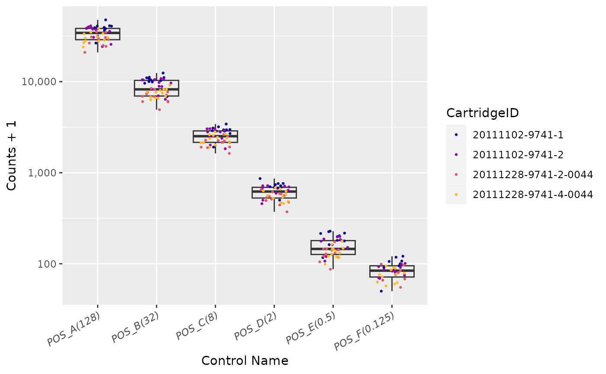
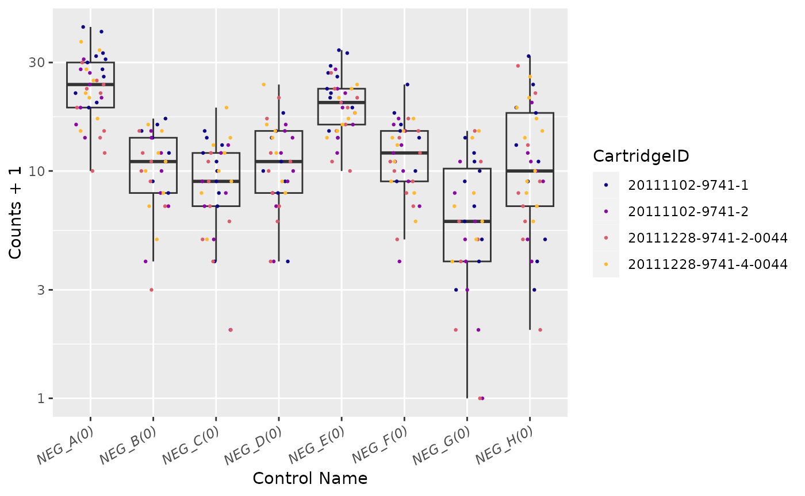
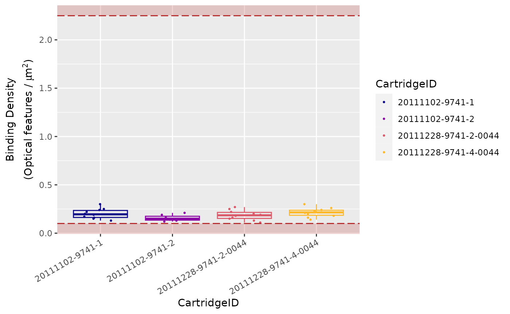

NACHO
A NAnostring quality Control dasHbOard
Mickaël Canouil, Ph.D., Gerard A. Bouland and Roderick C. Slieker, Ph.D.
January 12, 2024
Source:vignettes/NACHO.Rmd
NACHO.Rmd
Installation
# Install NACHO from CRAN:
install.packages("NACHO")
# Or the the development version from GitHub:
# install.packages("remotes")
remotes::install_github("mcanouil/NACHO")Overview
NACHO (NAnostring quality
Control dasHbOard) is
developed for NanoString nCounter data.
NanoString nCounter data is a messenger-RNA/micro-RNA (mRNA/miRNA)
expression assay and works with fluorescent barcodes.
Each barcode is assigned a mRNA/miRNA, which can be counted after
bonding with its target.
As a result each count of a specific barcode represents the presence of
its target mRNA/miRNA.
NACHO is able to load, visualise and normalise the exported
NanoString nCounter data and facilitates the user in performing a
quality control.
NACHO does this by visualising quality control metrics,
expression of control genes, principal components and sample specific
size factors in an interactive web application.
With the use of two functions, RCC files are summarised and
visualised, namely: load_rcc() and
visualise().
- The
load_rcc()function is used to preprocess the data. - The
visualise()function initiates a Shiny-based dashboard that visualises all relevant QC plots.
NACHO also includes a function normalise(),
which (re)calculates sample specific size factors and normalises the
data.
- The
normalise()function creates a list in which your settings, the raw counts and normalised counts are stored.
In addition (since v0.6.0) NACHO includes two (three) additional functions:
- The
render()function renders a full quality-control report (HTML) based on the results of a call toload_rcc()ornormalise()(usingprint()in a Rmarkdown chunk). - The
autoplot()function draws any quality-control metrics fromvisualise()andrender().
For more vignette("NACHO") and
vignette("NACHO-analysis").
Canouil M, Bouland GA, Bonnefond A, Froguel P, Hart L, Slieker R (2019). “NACHO: an R package for quality control of NanoString nCounter data.” Bioinformatics. ISSN 1367-4803, doi:10.1093/bioinformatics/btz647.
@Article{,
title = {{NACHO}: an {R} package for quality control of {NanoString} {nCounter} data},
author = {Mickaël Canouil and Gerard A. Bouland and Amélie Bonnefond and Philippe Froguel and Leen Hart and Roderick Slieker},
journal = {Bioinformatics},
address = {Oxford, England},
year = {2019},
month = {aug},
issn = {1367-4803},
doi = {10.1093/bioinformatics/btz647},
}An example
To display the usage and utility of NACHO, we show three examples in which the above mentioned functions are used and the results are briefly examined.
NACHO comes with presummarised data and in the first example
we use this dataset to call the interactive web application using
visualise().
In the second example, we show the process of going from raw RCC files
to visualisations with a dataset queried from GEO using
GEOquery.
In the third example, we use the summarised dataset from the second
example to calculate the sample specific size factors using
normalise() and its added functionality to predict
housekeeping genes.
Besides creating interactive visualisations, NACHO also
identifies poorly performing samples which can be seen under the Outlier
Table tab in the interactive web application.
While calling normalise(), the user has the possibility to
remove these outliers before size factor calculation.
Get NanoString nCounter data
Presummarised data from NACHO
This example shows how to use summarised data to call the interactive
web application.
The raw data used is from a study of Liu et al.
(2016) and
was acquired from the NCBI GEO public database (Barrett et al. 2013).

Raw data from GEO
Numerous NanoString nCounter datasets are available from GEO (Barrett et al. 2013).
In this example, we use a mRNA dataset from the study of Bruce et al. (2015) with the GEO accession number:
GSE70970. The data is extracted and prepared using the
following code.
library(GEOquery)
# Download data
gse <- getGEO("GSE70970")
getGEOSuppFiles(GEO = "GSE70970", baseDir = tempdir())
# Unzip data
untar(
tarfile = file.path(tempdir(), "GSE70970", "GSE70970_RAW.tar"),
exdir = file.path(tempdir(), "GSE70970", "Data")
)
# Get phenotypes and add IDs
targets <- pData(phenoData(gse[[1]]))
targets$IDFILE <- list.files(file.path(tempdir(), "GSE70970", "Data"))## IDFILE title geo_accession
## GSM1824143 GSM1824143_NPC-T-1.RCC.gz NPC-Training Set-1 GSM1824143
## GSM1824144 GSM1824144_NPC-T-10.RCC.gz NPC-Training Set-10 GSM1824144
## GSM1824145 GSM1824145_NPC-T-100.RCC.gz NPC-Training Set-100 GSM1824145
## GSM1824146 GSM1824146_NPC-T-101.RCC.gz NPC-Training Set-101 GSM1824146
## GSM1824147 GSM1824147_NPC-T-102.RCC.gz NPC-Training Set-102 GSM1824147
## status submission_date last_update_date type
## GSM1824143 Public on Jul 17 2015 Jul 15 2015 Jul 20 2015 RNA
## GSM1824144 Public on Jul 17 2015 Jul 15 2015 Jul 20 2015 RNA
## GSM1824145 Public on Jul 17 2015 Jul 15 2015 Jul 20 2015 RNA
## GSM1824146 Public on Jul 17 2015 Jul 15 2015 Jul 20 2015 RNA
## GSM1824147 Public on Jul 17 2015 Jul 15 2015 Jul 20 2015 RNA
## channel_count source_name_ch1 organism_ch1
## GSM1824143 1 FFPE Nasopharyngeal Carcinoma Biopsy Homo sapiens
## GSM1824144 1 FFPE Nasopharyngeal Carcinoma Biopsy Homo sapiens
## GSM1824145 1 FFPE Nasopharyngeal Carcinoma Biopsy Homo sapiens
## GSM1824146 1 FFPE Nasopharyngeal Carcinoma Biopsy Homo sapiens
## GSM1824147 1 FFPE Nasopharyngeal Carcinoma Biopsy Homo sapiens
## characteristics_ch1 characteristics_ch1.1 characteristics_ch1.2
## GSM1824143 distant.event: 0 distant.time: 5.095140315 survival.event: 0
## GSM1824144 distant.event: 0 distant.time: 7.471594798 survival.event: 0
## GSM1824145 distant.event: 0 distant.time: 4.8678987 survival.event: 0
## GSM1824146 distant.event: 0 distant.time: 3.835728953 survival.event: 0
## GSM1824147 distant.event: 0 distant.time: 4.292950034 survival.event: 0
## characteristics_ch1.3 characteristics_ch1.4
## GSM1824143 survival.time: 5.095140315 local.event: 1
## GSM1824144 survival.time: 7.471594798 local.event: 1
## GSM1824145 survival.time: 4.8678987 local.event: 0
## GSM1824146 survival.time: 3.835728953 local.event: 0
## GSM1824147 survival.time: 4.292950034 local.event: 1
## characteristics_ch1.5 characteristics_ch1.6
## GSM1824143 local.time: 5.075975359 local.regional.time: 5.075975359
## GSM1824144 local.time: 1.204654346 local.regional.time: 1.204654346
## GSM1824145 local.time: 4.8678987 local.regional.time: 4.8678987
## GSM1824146 local.time: 3.835728953 local.regional.time: 3.835728953
## GSM1824147 local.time: 2.828199863 local.regional.time: 2.828199863
## characteristics_ch1.7 characteristics_ch1.8
## GSM1824143 local.regional.event: 1 nodal.time: 5.095140315
## GSM1824144 local.regional.event: 1 nodal.time: 7.471594798
## GSM1824145 local.regional.event: 0 nodal.time: 4.8678987
## GSM1824146 local.regional.event: 0 nodal.time: 3.835728953
## GSM1824147 local.regional.event: 1 nodal.time: 4.292950034
## characteristics_ch1.9 characteristics_ch1.10
## GSM1824143 nodal.event: 0 disease.event: 1
## GSM1824144 nodal.event: 0 disease.event: 1
## GSM1824145 nodal.event: 0 disease.event: 0
## GSM1824146 nodal.event: 0 disease.event: 0
## GSM1824147 nodal.event: 0 disease.event: 1
## characteristics_ch1.11 characteristics_ch1.12
## GSM1824143 disease.time: 5.075975359 t: T1
## GSM1824144 disease.time: 1.204654346 t: T1
## GSM1824145 disease.time: 4.8678987 t: T1
## GSM1824146 disease.time: 3.835728953 t: T3
## GSM1824147 disease.time: 2.828199863 t: T3
## characteristics_ch1.13 characteristics_ch1.14
## GSM1824143 n: N0 age: 45.97260274
## GSM1824144 n: N2c age: 46.4
## GSM1824145 n: N1 age: 50.36438356
## GSM1824146 n: N0 age: 64.09041096
## GSM1824147 n: N2 age: 27.57808219
## characteristics_ch1.15 characteristics_ch1.16
## GSM1824143 disease.spec.time: 5.095140315 disease.spec.event: 0
## GSM1824144 disease.spec.time: 7.471594798 disease.spec.event: 0
## GSM1824145 disease.spec.time: 4.8678987 disease.spec.event: 0
## GSM1824146 disease.spec.time: 3.835728953 disease.spec.event: 0
## GSM1824147 disease.spec.time: 4.292950034 disease.spec.event: 0
## characteristics_ch1.17 characteristics_ch1.18 characteristics_ch1.19
## GSM1824143 gender: Male chemo: 0 bin.t: 0
## GSM1824144 gender: Male chemo: 1 bin.t: 0
## GSM1824145 gender: Male chemo: 0 bin.t: 0
## GSM1824146 gender: Female chemo: 1 bin.t: 1
## GSM1824147 gender: Male chemo: 1 bin.t: 1
## treatment_protocol_ch1 growth_protocol_ch1 molecule_ch1
## GSM1824143 Xylene de-paraffinization NA total RNA
## GSM1824144 Xylene de-paraffinization NA total RNA
## GSM1824145 Xylene de-paraffinization NA total RNA
## GSM1824146 Xylene de-paraffinization NA total RNA
## GSM1824147 Xylene de-paraffinization NA total RNA
## extract_protocol_ch1
## GSM1824143 Recover All Total Nucleic Acid Isolation Kit for FFPE (Ambion, Inc)
## GSM1824144 Recover All Total Nucleic Acid Isolation Kit for FFPE (Ambion, Inc)
## GSM1824145 Recover All Total Nucleic Acid Isolation Kit for FFPE (Ambion, Inc)
## GSM1824146 Recover All Total Nucleic Acid Isolation Kit for FFPE (Ambion, Inc)
## GSM1824147 Recover All Total Nucleic Acid Isolation Kit for FFPE (Ambion, Inc)
## label_ch1 label_protocol_ch1
## GSM1824143 Nanostring fluorophore barcode Nanostring nCounter Analysis System
## GSM1824144 Nanostring fluorophore barcode Nanostring nCounter Analysis System
## GSM1824145 Nanostring fluorophore barcode Nanostring nCounter Analysis System
## GSM1824146 Nanostring fluorophore barcode Nanostring nCounter Analysis System
## GSM1824147 Nanostring fluorophore barcode Nanostring nCounter Analysis System
## taxid_ch1 hyb_protocol
## GSM1824143 9606 Nanostring nCounter Analysis System
## GSM1824144 9606 Nanostring nCounter Analysis System
## GSM1824145 9606 Nanostring nCounter Analysis System
## GSM1824146 9606 Nanostring nCounter Analysis System
## GSM1824147 9606 Nanostring nCounter Analysis System
## scan_protocol
## GSM1824143 Nanostring nCounter Analysis System
## GSM1824144 Nanostring nCounter Analysis System
## GSM1824145 Nanostring nCounter Analysis System
## GSM1824146 Nanostring nCounter Analysis System
## GSM1824147 Nanostring nCounter Analysis System
## data_processing
## GSM1824143 variance stabilization and normalization (vsn) called through the NanoStringNorm package for R
## GSM1824144 variance stabilization and normalization (vsn) called through the NanoStringNorm package for R
## GSM1824145 variance stabilization and normalization (vsn) called through the NanoStringNorm package for R
## GSM1824146 variance stabilization and normalization (vsn) called through the NanoStringNorm package for R
## GSM1824147 variance stabilization and normalization (vsn) called through the NanoStringNorm package for R
## platform_id contact_name contact_email
## GSM1824143 GPL20699 Jeff,,Bruce jbruce@uhnresearch.ca
## GSM1824144 GPL20699 Jeff,,Bruce jbruce@uhnresearch.ca
## GSM1824145 GPL20699 Jeff,,Bruce jbruce@uhnresearch.ca
## GSM1824146 GPL20699 Jeff,,Bruce jbruce@uhnresearch.ca
## GSM1824147 GPL20699 Jeff,,Bruce jbruce@uhnresearch.ca
## contact_institute contact_address contact_city
## GSM1824143 Princess Margaret Cancer Centre 101 College St. Toronto
## GSM1824144 Princess Margaret Cancer Centre 101 College St. Toronto
## GSM1824145 Princess Margaret Cancer Centre 101 College St. Toronto
## GSM1824146 Princess Margaret Cancer Centre 101 College St. Toronto
## GSM1824147 Princess Margaret Cancer Centre 101 College St. Toronto
## contact_state contact_zip/postal_code contact_country
## GSM1824143 Ontario M5G1L7 Canada
## GSM1824144 Ontario M5G1L7 Canada
## GSM1824145 Ontario M5G1L7 Canada
## GSM1824146 Ontario M5G1L7 Canada
## GSM1824147 Ontario M5G1L7 Canada
## supplementary_file
## GSM1824143 ftp://ftp.ncbi.nlm.nih.gov/geo/samples/GSM1824nnn/GSM1824143/suppl/GSM1824143_NPC-T-1.RCC.gz
## GSM1824144 ftp://ftp.ncbi.nlm.nih.gov/geo/samples/GSM1824nnn/GSM1824144/suppl/GSM1824144_NPC-T-10.RCC.gz
## GSM1824145 ftp://ftp.ncbi.nlm.nih.gov/geo/samples/GSM1824nnn/GSM1824145/suppl/GSM1824145_NPC-T-100.RCC.gz
## GSM1824146 ftp://ftp.ncbi.nlm.nih.gov/geo/samples/GSM1824nnn/GSM1824146/suppl/GSM1824146_NPC-T-101.RCC.gz
## GSM1824147 ftp://ftp.ncbi.nlm.nih.gov/geo/samples/GSM1824nnn/GSM1824147/suppl/GSM1824147_NPC-T-102.RCC.gz
## data_row_count age:ch1 bin.t:ch1 chemo:ch1 disease.event:ch1
## GSM1824143 734 45.97260274 0 0 1
## GSM1824144 734 46.4 0 1 1
## GSM1824145 734 50.36438356 0 0 0
## GSM1824146 734 64.09041096 1 1 0
## GSM1824147 734 27.57808219 1 1 1
## disease.spec.event:ch1 disease.spec.time:ch1 disease.time:ch1
## GSM1824143 0 5.095140315 5.075975359
## GSM1824144 0 7.471594798 1.204654346
## GSM1824145 0 4.8678987 4.8678987
## GSM1824146 0 3.835728953 3.835728953
## GSM1824147 0 4.292950034 2.828199863
## distant.event:ch1 distant.time:ch1 gender:ch1 local.event:ch1
## GSM1824143 0 5.095140315 Male 1
## GSM1824144 0 7.471594798 Male 1
## GSM1824145 0 4.8678987 Male 0
## GSM1824146 0 3.835728953 Female 0
## GSM1824147 0 4.292950034 Male 1
## local.regional.event:ch1 local.regional.time:ch1 local.time:ch1
## GSM1824143 1 5.075975359 5.075975359
## GSM1824144 1 1.204654346 1.204654346
## GSM1824145 0 4.8678987 4.8678987
## GSM1824146 0 3.835728953 3.835728953
## GSM1824147 1 2.828199863 2.828199863
## n:ch1 nodal.event:ch1 nodal.time:ch1 survival.event:ch1
## GSM1824143 N0 0 5.095140315 0
## GSM1824144 N2c 0 7.471594798 0
## GSM1824145 N1 0 4.8678987 0
## GSM1824146 N0 0 3.835728953 0
## GSM1824147 N2 0 4.292950034 0
## survival.time:ch1 t:ch1
## GSM1824143 5.095140315 T1
## GSM1824144 7.471594798 T1
## GSM1824145 4.8678987 T1
## GSM1824146 3.835728953 T3
## GSM1824147 4.292950034 T3After we extracted the dataset to the
/tmp/Rtmp8QDtI5/GSE70970/Data directory, a
Samplesheet.csv containing a column with the exact names of
the files for each sample can be written or use as is.
The load_rcc() function
The first argument requires the path to the directory containing the
RCC files, the second argument is the location of samplesheet followed
by third argument with the column name containing the exact names of the
files.
The housekeeping_genes and
normalisation_method arguments respectively indicate which
housekeeping genes and normalisation method should be used.
GSE70970_sum <- load_rcc(
data_directory = file.path(tempdir(), "GSE70970", "Data"), # Where the data is
ssheet_csv = targets, # The samplesheet
id_colname = "IDFILE", # Name of the column that contains the unique identfiers
housekeeping_genes = NULL, # Custom list of housekeeping genes
housekeeping_predict = TRUE, # Whether or not to predict the housekeeping genes
normalisation_method = "GEO", # Geometric mean or GLM
n_comp = 5 # Number indicating how many principal components should be computed.
)
## [NACHO] Importing RCC files.
## Error in load_rcc(data_directory = file.path(tempdir(), "GSE70970", "Data"), : [NACHO] Multiple Nanostring file/software versions detected.
## Please provide a set of files with the same version.
## - FileVersion: '1.6', '1.6'
## - SoftwareVersion: '2.1.2.3', '2.1.1.0005'The visualise() function
When the summarisation is done, the summarised (or normalised) data
can be visualised using the visualise() function as can be
seen in the following chunk of code.
visualise(GSE70970_sum)The sidebar includes widgets to control quality-control thresholds. These widgets differ according to the selected tab. Each sample in the plots can be coloured based on either technical specifications which are included in the RCC files or based on specifications of your own choosing, though these specifications need to be included in the samplesheet.
The normalise() function
NACHO allows the discovery of housekeeping genes within your own dataset. NACHO finds the five best suitable housekeeping genes, however, it is possible that one of these five genes might not be suitable, which is why a subset of these discovered housekeeping genes might work better in some cases. For this example, we use the GSE70970 dataset from the previous example. The discovered housekeeping genes are saved in the result object as predicted_housekeeping.
print(GSE70970_sum[["housekeeping_genes"]])
## Error in eval(expr, envir, enclos): object 'GSE70970_sum' not found## Error in eval(expr, envir, enclos): object 'GSE70970_sum' not found
my_housekeeping <- GSE70970_sum[["housekeeping_genes"]][-c(1, 2)]
## Error in eval(expr, envir, enclos): object 'GSE70970_sum' not found
print(my_housekeeping)
## Error in eval(expr, envir, enclos): object 'my_housekeeping' not foundThe next step is the actual normalisation. The first argument
requires the summary which is created with the load_rcc()
function. The second argument requires a vector of gene names. In this
case, it is a subset of the discovered housekeeping genes we just made.
With the third argument the user has the choice to remove the outliers.
Lastly, the normalisation method can be choosed.
Here, the user has a choice between "GLM" or
"GEO". The differences between normalisation methods are
nuanced, however, a preference for either method are use case
specific.
In this example, "GLM" is used.
GSE70970_norm <- normalise(
nacho_object = GSE70970_sum,
housekeeping_genes = my_housekeeping,
housekeeping_predict = FALSE,
housekeeping_norm = TRUE,
normalisation_method = "GEO",
remove_outliers = TRUE
)
## Error in eval(expr, envir, enclos): object 'GSE70970_sum' not foundnormalise() returns a list object (same as
load_rcc()) with raw_counts and
normalised_counts slots filled with the raw and normalised
counts. Both counts are also in the NACHO data.frame.
The autoplot() function
The autoplot() function provides an easy way to plot any
quality-control from the visualise() function.
autoplot(
object = GSE74821,
x = "BD",
colour = "CartridgeID",
size = 0.5,
show_legend = TRUE
)The possible metrics (x) are:
-
"BD"(Binding Density) -
"FoV"(Imaging) -
"PCL"(Positive Control Linearity) -
"LoD"(Limit of Detection) -
"Positive"(Positive Controls) -
"Negative"(Negative Controls) -
"Housekeeping"(Housekeeping Genes) -
"PN"(Positive Controls vs. Negative Controls) -
"ACBD"(Average Counts vs. Binding Density) -
"ACMC"(Average Counts vs. Median Counts) -
"PCA12"(Principal Component 1 vs. 2) -
"PCAi"(Principal Component scree plot) -
"PCA"(Principal Components planes) -
"PFNF"(Positive Factor vs. Negative Factor) -
"HF"(Housekeeping Factor) -
"NORM"(Normalisation Factor)
Positive Controls
## Warning: The following aesthetics were dropped during statistical transformation: colour
## ℹ This can happen when ggplot fails to infer the correct grouping structure in
## the data.
## ℹ Did you forget to specify a `group` aesthetic or to convert a numerical
## variable into a factor?
Negative Controls
## Warning: The following aesthetics were dropped during statistical transformation: colour
## ℹ This can happen when ggplot fails to infer the correct grouping structure in
## the data.
## ℹ Did you forget to specify a `group` aesthetic or to convert a numerical
## variable into a factor?
Housekeeping Genes
## Warning: The following aesthetics were dropped during statistical transformation: colour
## ℹ This can happen when ggplot fails to infer the correct grouping structure in
## the data.
## ℹ Did you forget to specify a `group` aesthetic or to convert a numerical
## variable into a factor?


Positive Factor vs. Negative Factor
## Warning: Transformation introduced infinite values in continuous y-axis
Housekeeping Factor
## Warning: Transformation introduced infinite values in continuous x-axis
## Warning: Transformation introduced infinite values in continuous x-axis
## Warning: Transformation introduced infinite values in continuous y-axis
## Transformation introduced infinite values in continuous y-axis

NACHO as a standalone app
NACHO is also available as a standalone app to be used in a
shiny server configuration. A convenience function deploy()
is available to directly copy the NACHO app to the default
directory of a shiny server.
deploy(directory = "/srv/shiny-server", app_name = "NACHO")The app can also be run directly, without manually summarising and normalising RCC files:
shiny::runApp(system.file("app", package = "NACHO"))
The render() function
The render() function renders a comprehensive HTML
report, using print(..., echo = TRUE), which includes all
quality-control metrics and description of those metrics.
render(
nacho_object = GSE74821,
colour = "CartridgeID",
output_file = "NACHO_QC.html",
output_dir = ".",
size = 0.5,
show_legend = TRUE,
clean = TRUE
)The underneath function print() can be used directly
within any Rmarkdown chunk, setting the parameter
echo = TRUE.
print(
x = GSE74821,
colour = "CartridgeID",
size = 0.5,
show_legend = TRUE,
echo = TRUE,
title_level = 3
)Settings
Predict housekeeping genes: FALSE
Normalise using housekeeping genes: TRUE
Housekeeping genes available: MRPL19, PSMC4, SF3A1, RPLP0, PUM1, ACTB, TFRC and GUSB
Normalise using: GLM
Principal components to compute: 10
-
Remove outliers: FALSE
- Binding Density (BD) < 0.1
- Binding Density (BD) > 2.25
- Field of View (FoV) < 75
- Positive Control Linearity (PCL) < 0.95
- Limit of Detection (LoD) < 2
- Positive normalisation factor (Positive_factor) < 0.25
- Positive normalisation factor (Positive_factor) > 4
- Housekeeping normalisation factor (house_factor) < 0.091
- Housekeeping normalisation factor (house_factor) > 11
QC Metrics
Binding Density
The imaging unit only counts the codes that are unambiguously
distinguishable.
It simply will not count codes that overlap within an image.
This provides increased confidence that the molecular counts you receive
are from truly recognisable codes.
Under most conditions, forgoing the few barcodes that do overlap will
not impact your data.
Too many overlapping codes in the image, however, will create a
condition called image saturation in which significant data loss could
occur (critical data loss from saturation is uncommon).
To determine the level of image saturation, the nCounter instrument
calculates the number of optical features per square micron for each
lane as it processes the images.
This is called the Binding Density
(BD).
The Binding Density is useful for determining whether
data collection has been compromised due to image saturation. The
acceptable range for Binding Density is:
-
0.1 - 2.25for MAX/FLEX instruments -
0.1 - 1.8for SPRINT instruments
Within these ranges, relatively few reporters on the slide surface
will overlap, enabling the instrument to accurately tabulate counts for
each reporter species.
A Binding Density significantly greater than the upper
limit in either range is indicative of overlapping reporters on the
slide surface.
The counts observed in lanes with a Binding Density at
this level may have had significant numbers of codes ignored, which
could potentially affect quantification and linearity of the assay.

Field of View (Imaging)
Each individual lane scanned on an nCounter system is divided into a
few hundred imaging sections, called Fields of View
(FOV), the exact number of which will depend on the
system being used (i.e., MAX/FLEX or
SPRINT), and the scanner settings selected by the
user.
The system images these FOVs separately, and sums the
barcode counts of all FOVs from a single lane to form
the final raw data count for each unique barcode target.
Finally, the system reports the number of FOVs
successfully imaged as FOV Counted.
Significant discrepancy between the number of FOV
for which imaging was attempted (FOV Count) and for
which imaging was successful (FOV Counted) may indicate
an issue with imaging performance.
Recommended percentage of registered FOVs (i.e., FOV
Counted over FOV Count) is
75 %.
Positive Control Linearity
Six synthetic DNA control targets are included with every nCounter
Gene Expression assay.
Their concentrations range linearly (in codeset) from
128 fM to 0.125 fM, and they are referred to
as POS_A to POS_F, respectively.
These Positive Controls are typically used to measure
the efficiency of the hybridization reaction, and their step-wise
concentrations also make them useful in checking the linearity
performance of the assay.
Since the known concentrations of the Positive Controls increase in a linear fashion, the resulting counts should, as well.
Limit of Detection
The limit of detection (LoD) is determined by
measuring the ability to detect POS_E, the
0.5 fM positive control probe, which corresponds to about
10,000 copies of this target within each sample tube.
On a FLEX/MAX system, the standard
input of 100 ng of total RNA will roughly correspond to
about 10,000 cell equivalents (assuming one cell contains
10 pg total RNA on average).
An nCounter assay run on the FLEX/MAX
system should thus conservatively be able to detect roughly one
transcript copy per cell for each target (or 10,000 total transcript
copies).
In most (codeset) assays, you will observe that even the
POS_F probe (equivalent to 0.25 copies per cell) is
detectable above background.